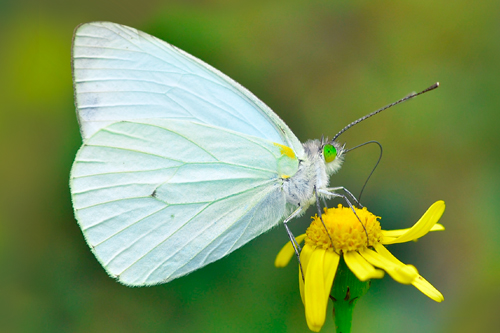
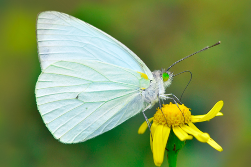

¿Qué es una mariposa?
La mariposa es un insecto con alas escamosas que pasa por una transformación asombrosa desde su nacimiento hasta su adultez.
La mariposa es un insecto con alas escamosas que pasa por una transformación asombrosa desde su nacimiento hasta su adultez.
El ciclo de vida de la mariposa consta de cuatro etapas: huevo, oruga, crisálida y adulto.
| Especie | Continente |
|---|---|
| Monarca | América |
| Morpho azul | Sudamérica |
| Aurora | Europa |